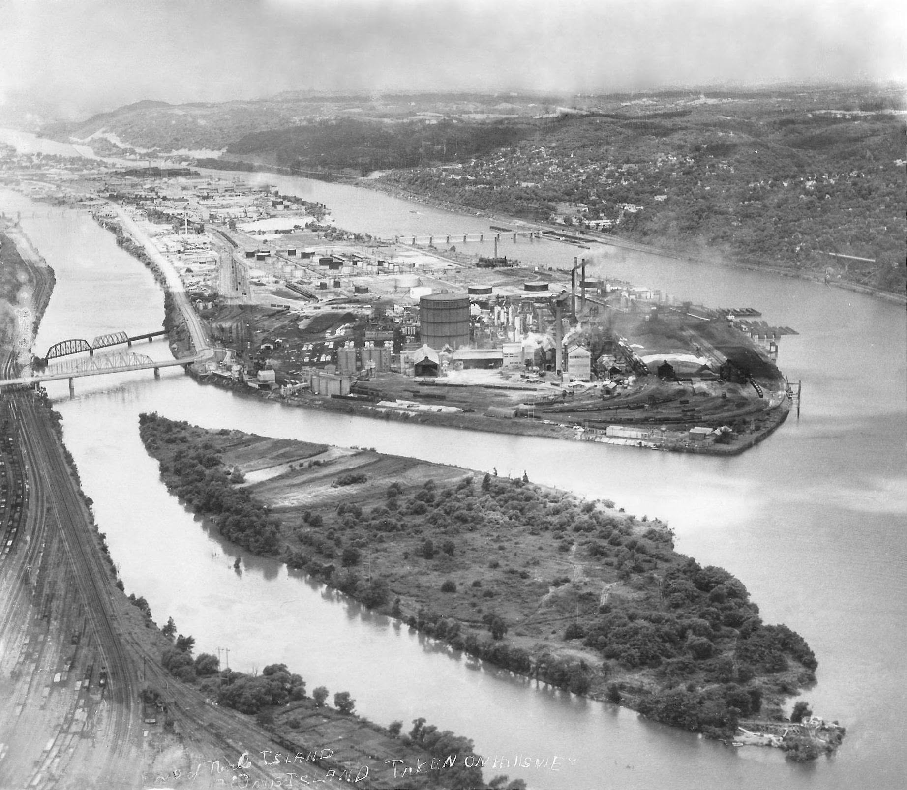

Pittsburgh & Chartiers Valley Division
HART Railroad
Welcome to Neville Island — five miles of river industry, South Yard classification, and the crews who keep CSX and the POHC moving.
Step into the island
Primers, industries, photographs, official publications, and the railroad story — the same world we hand to new crew.
Operator briefing
Island history, jobs on the board, destination colors, and the track scale.
Industries
Aristech, Stucki, Calgon, Ferrellgas, Kosmos, Shenango — commodities and logos.
Photo gallery
Place, layout captures, maps, and current control panels — rolling stock is separate.
Rolling stock
Car fleet sides, aisle roster photos, and published power.
Articles & stories
Rails Through Time, the short story, STS ops article, and history notes.
Official publications
Pipeline-published primers, crew sheets, station maps, and SOPs.
Control panels
Current Digicon, classic CTC, and Neville Island LE — plus a device lookup map.
Dispatcher guides
USS CTC, CATS Digicon, Auto Dispatcher, Digicon system.
When trains are running
Live tools and the device roster stay available for the desk.